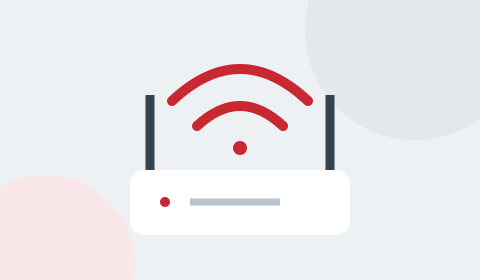

Laptops
Diagnostics, screens, keyboards, batteries, chargers, cleaning and overheating issues.


Technology with personal support
Our services
Support for individuals and businesses, tailored to each device.
Diagnostics, screens, keyboards, batteries, chargers, cleaning and overheating issues.
Repairs, PC assembly, SSD and RAM installation, and compatibility checks.

Router, repeater and wired network setup, Wi-Fi coverage and printer sharing.
Installation and setup of systems, drivers and applications, and performance optimisation.
Malware removal, protection setup and backups of your files.
File migration, assessment of data recovery options and remote support by agreement.
Fast websites for local businesses, with hosting, SSL certificate and maintenance included in a monthly plan. Technical support to keep your website running smoothly.
View the on-site service areas and check whether we can provide IT support at your location.
From first contact to a solution
Complete the form with your device, symptoms and location so we can assess your request and prepare the visit.
We schedule on-site assistance or, where appropriate, a remote session. The appointment and service terms are agreed in advance.
After the diagnosis, we explain the proposed work and its cost. Work only starts with your approval.
Yes. I visit homes and offices in Greater Lisbon and the Cascais area to solve computer, printer and Wi-Fi problems and install or configure equipment. Outside the on-site service area, we can arrange a remote session if the issue can be handled remotely.
Yes. I diagnose and repair desktops and laptops: slow performance, startup failures, replacing drives with SSDs, cleaning, and memory or component upgrades. I assess the equipment and provide a quote for approval before repairing it.
For urgent requests, call or use the WhatsApp button on the home page: I aim to reply the same day, subject to availability. I reply to form and email enquiries within 24 business hours. Response time is not necessarily the time until an intervention.
A remote session to assess the existing network and equipment, investigate the cause of the issue and provide concrete recommendations. If equipment needs to be purchased, you receive a list of recommended models. You are free to use these recommendations without hiring me for installation.
Contact us to assess your request and arrange the next step.
Slowdowns, freezes and startup problems can have different causes. We assess your laptop or desktop and check compatibility before suggesting upgrades such as an SSD or additional RAM.
Explore diagnostics and repairsConnection failures and coverage gaps require an assessment of the space, router and devices. We configure networks to suit the premises without promising speeds that depend on the internet provider.
Explore network and Wi-Fi supportVisits in Cascais, Oeiras, Sintra and Lisbon are arranged in advance. Software and configuration issues may be suitable for remote support, subject to assessment, permission and an appointment.
Check coverage and request support